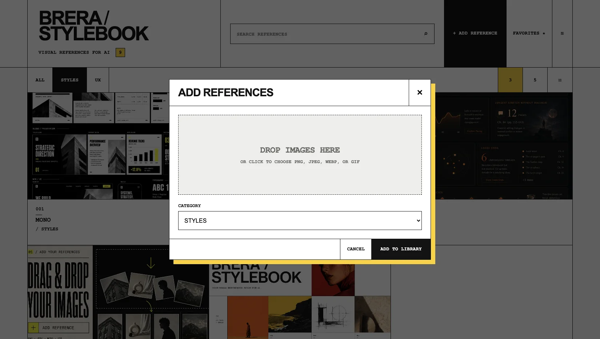
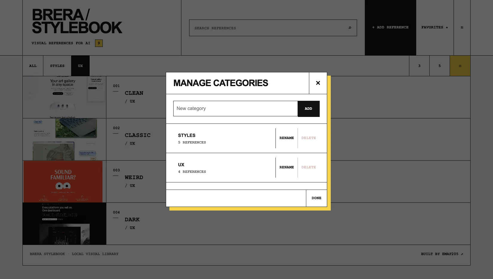
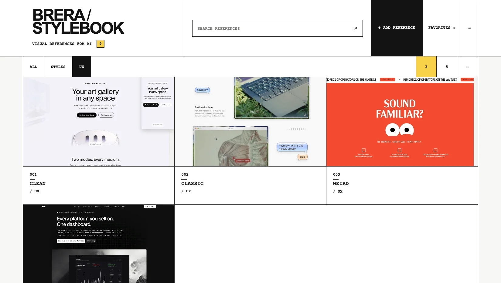

Your visual references. Ready for AI.
Keep reusable image references in one local visual library. Search or browse, click to copy, then paste the reference into ChatGPT or another compatible AI tool.

Folders store files. They do not create a reference workflow.
The useful image is usually somewhere in Downloads, screenshots, bookmarks, Pinterest, an old project folder or a chat. StyleBook gives those references one place built for retrieval and reuse.
Find the file again.
Open folders, preview files, remember filenames, upload or paste again.
See, search, copy.

Browse visually, search by title, filter Favorites, copy the image and continue working.
New in 1.2.0.
The current release starts useful and keeps upgrades safe.
STARTER9 references included
Five references in STYLES and four in UX are available on first launch.
MIGRATIONExisting libraries preserved
Untouched v1.1 starter data can migrate without overwriting user-created libraries.
BACKUPStarter images travel with backup
Exported backups include the embedded starter references, so the backup is self-contained.
Add. Organize. Copy.
The core workflow is three actions.
Add
Drag in PNG, JPEG, WEBP or GIF references. Duplicate files are skipped when detected during import.
Organize
Use custom categories, titles, search, Favorites and 3-column, 5-column or list views.
Copy
Click a reference, wait for the copy confirmation, then paste it into a compatible AI destination.
See the handoff.
The point is not collecting more images. It is retrieving the right reference and moving it into the next AI task with less friction.
Actual 1.2.0 screens.
No fictional UI. These screenshots come from the current release package.





What the product does.
Only current, verified features.
LOCALLocal-first library
The working library is stored by the browser on the current device. No account is required by the app.
ADDDrag & drop
Add PNG, JPEG, WEBP and GIF images locally.
FINDSearch + Favorites
Search titles and keep frequent references one click away.
ORGANIZECustom categories
Create, rename and manage categories; edit titles and recategorize references.
VIEWThree layouts
Switch between 3-column, 5-column and list views.
BACKUPExport + restore
Export a JSON backup and restore with Merge or Replace.
Library, not mood board.
A mood board presents a direction. A reference library keeps material you expect to retrieve across many projects.
| Folders | Mood board | StyleBook | |
|---|---|---|---|
| Primary job | Store files | Present one direction | Retrieve and reuse references |
| Visual browsing | Depends on file manager | Strong | Strong |
| Long-term reuse | Manual | Usually project-specific | Built around a growing personal library |
| AI handoff | Locate and upload/paste | Select or export | Copy from the library |
What you get.
The current Gumroad-ready release package contains:
Extract. Open. Build your library.
For the most reliable image-copy experience, the current README recommends a current version of Google Chrome and opening the extracted application directly.
FAQ.
Product facts that matter before purchase.
Where are my images stored?
The working library is stored by the browser on the current device. Export backups regularly, especially before clearing browser data, changing browser or moving to another computer.
What changed in version 1.2.0?
Version 1.2.0 adds a 9-reference starter library in STYLES and UX, migration from untouched v1.1 starter data without overwriting user-created libraries, and self-contained backup export for the embedded starter references.
Do I need to install software?
The product is delivered as a ZIP. Extract it completely, open START-HERE.html, then launch StyleBook in a current desktop browser. No traditional installer is required.
Which image formats are supported?
PNG, JPEG, WEBP and GIF.
Does it work with ChatGPT and other AI tools?
StyleBook copies a selected reference image to the clipboard so it can be pasted into a compatible destination. Clipboard behavior depends on browser and destination support.
Can I back up the library?
Yes. Export creates a JSON backup. Restore supports Merge and Replace. In 1.2.0, embedded starter images are included in the exported backup.
Can I use it for client work?
The included licence permits personal work and professional or client workflows. Redistribution, resale or publishing the software is not permitted.